Prologue
바야흐로 대개발자시대에도 그저 그런 개발 경험을 가진 개발자는 수십번의 도전 끝에 이직에 실패하였다.
결국 카페를 오픈하여 새출발을 하기로 한 은퇴한 개발자 🐳고래의 이야기.
1인 카페로 주문도 받고 바리스타 역할도 해야하는 상황, 개발자는 은퇴 당했지만 개발이 싫어진 건 아니었던 고래는
카페 오픈 전 직접 주문 시스템을 개발하여 바리스타역에 집중 할 수 있는 환경을 만들어 보고자 한다.
step 0
고래는 먼저 간단하게 아키텍처를 그려보기로 했다.
 얼추 머릿속 생각을 정리 해 본 고래는 이제 개발 환경을 정하기로 한다. 자바 공화국답게 자바? 러스트 붐은 오니깐 러스트? 드디어 제네릭이 적용 된 고? 구관이 명관인 노드? 노드를 주로 사용해 왔지만 NestJS 프레임워크 경험이 없었던 고래는 못 다 이룬 꿈을 이루겠다며 NestJS를 활용하고 Event Bus로 Kafka를 사용하기로 결정했다.시작이 반이니깐 프로젝트까지만 만들어 놓고 마무리 하기로 한다.
$ npm i -g @nestjs/cli
$ nest new [project-name]